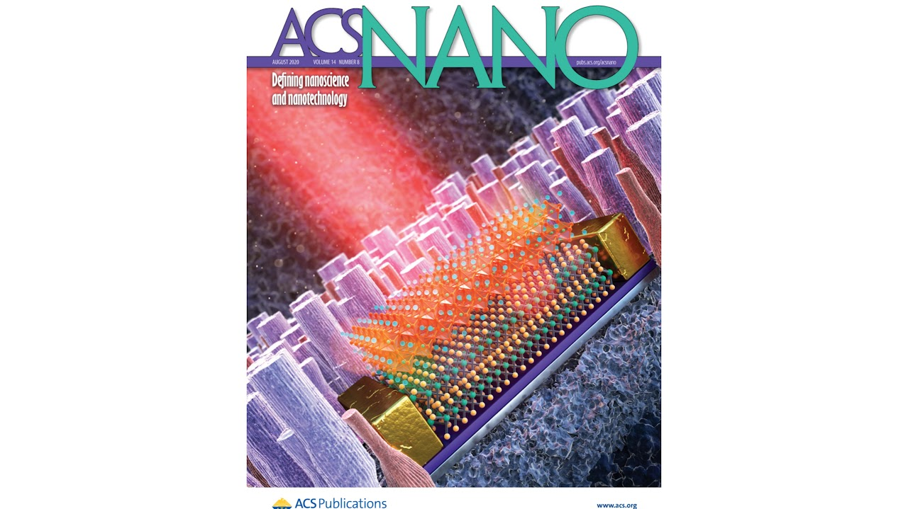
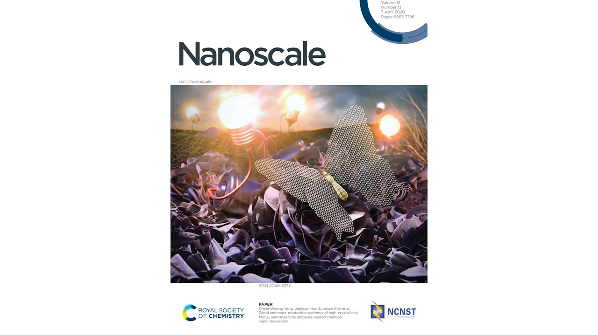
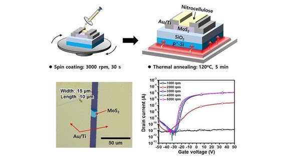

2020Before Gachon University
[18] (Inside Front Cover) Sensory Adaptation and Neuromorphic Phototransistors Based on CsPb(Br1–xIx)3 Perovskite and MoS2 Hybrid Structure, ACS Nano, July (2020)
Seongin Hong, Seung Hee Choi, Jongsun Park, Hocheon Yoo, Joo Youn Oh, Euyheon Hwang, Dae Ho Yoon, Sunkook Kim

[17] (Cover) Rapid and mass-producible synthesis of high-crystallinity MoSe2 nanosheets by ampoule-loaded chemical vapor deposition, Nanoscale, February (2020)
Na Liu, Woong Choi, Hyeongi Kim, Chulseung Jung, Jeonghun Kim, Soo Ho Choo, Yena Kwon, Byeong-Seon An, Seongin Hong, Seongjoon So, Cheol-Woong Yang, Jaehyun Hur, Sunkook Kim

[16] Improvement of the stability and optoelectronic characteristics of molybdenum disulfide thin-film transistors by applying a nitrocelluose passivation layer, Journal of Information Display, January (2020)
Byung Ha Kang, Su Jin Jung, Seonghwan Hong, I. Sak Lee, Seongin Hong, Sunkook Kim, Hyun Jae Kim
